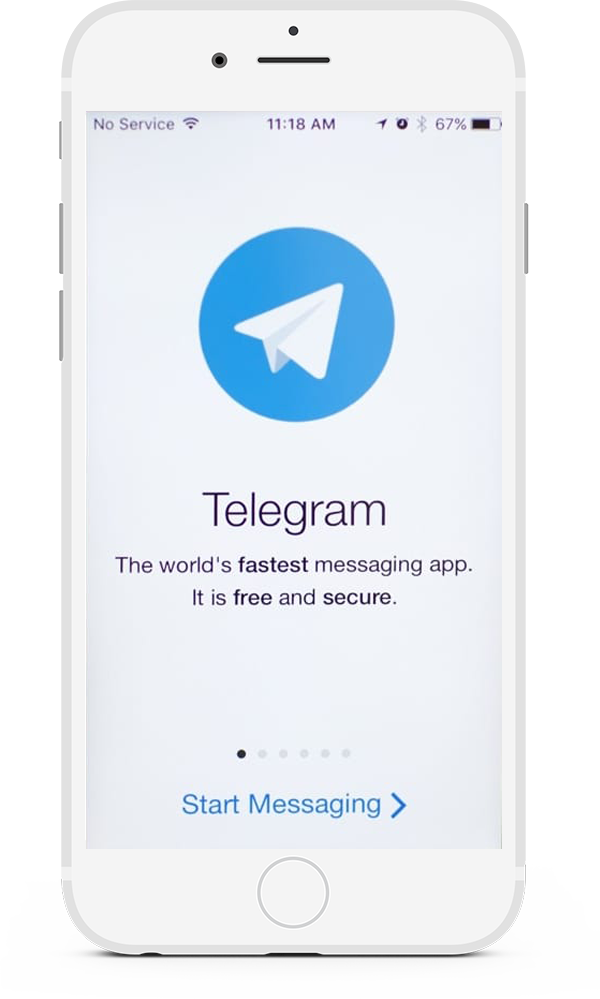

Telegram — кроссплатформенный мессенджер, позволяющий обмениваться сообщениями и медиафайлами многих форматов
Имеется поддержка огромного количества устройств, и на всех плиложение работает одинаково хорошо и не теряет своей функциональности.
Множество различный надстроек, тем, на любой вкус
Клиент для Windows и приложение Android работают очень быстро, а прочитанные сообщения синхронизируются моментально.
Понятный интерфейс, в котором разберется каждый.

“ Оперативная связь с тех. поддержкой, маркетологами и разработчиками, разделение их по группам. Работает даже в случае плохой связи с оператором, в отличии от других мессенджеров ( необъяснимо , но факт ), что в свою очередь добавляет мобильность и скорость в решении неотложных задач. Простое, доступное API. Постоянные обновления и улучшения. Бесплатный. Используется и в роли бота для уведомлений о новых задачах, уведомлений с сервера, для управления сервером. ”
“Лучший на данный момент мессенджер, который можно себе представить. Огромный функционал позволяет осуществлять кучу разных операций, не ограничиваясь одними только сообщениями. Про надежность даже не говорю, все чаты проходят спецуальную шифровку, и можно не переживать, что это утечет куда-то потом.”
“Я в бизнесе занимаюсь процессами и все что на вайбере настраивается, имеет ниже KPI чем на телеграмм, касается всего по доле процента но это быстрее, если что-то есть на секунду быстрее, значит выбираем это. У меня в вайбере только мама и подъезд. С меньшей вероятностью твой контакт достанется третьим лицам, группы показывают только имя аккаунта. Стикеры, гифки добавляют эмоций в общение даже по работе, а дальше в развитии компании появляются чат-боты которые с помощью телеграмм собирают все нужные данные по системе...”
Наряду с индивидуальными чатами в Telegram есть группы (как в Skype и WhatsApp), которые отлично подходят для приватного общения с друзьями или коллегами
В отличие от групп, каналы вещают в одностороннем порядке. Сообщения могут отправлять только администраторы канала, а получают их все подписчики.
Боты – это программные алгоритмы, которые автоматизируют процессы и упрощают жизнь. Боты выполняют анализ большого количества данных и выдают нам то, что мы ищем.
Стикеры — это изображения, которые могут помочь выразить эмоции лучше emoji. Если в поле ввода сообщения написать emoji, на выбор будет предложено несколько стикеров, которые можно отправить вместо него
Звонки используют оконченное шифрование, как и Секретные чаты. Когда это возможно, звонки будут проходить через одноранговое соединение, используя аудиокодеки для экономии трафика.
В Telegram встроен полноценный фоторедактор. В отличие от других мессенджеров, на фотографию можно не только добавить стикеры, но и полностью её отретушировать — изменить яркость, контрастность, насыщенность цвета и т. д.
Увидев, в преимущества Telegram выше, я думаю у тебя не осталось сомнений что он лучший среди всех.
Telegram — это быстрое и защищённое от прослушивания приложение для обмена сообщениями. Почти как SMS, однако помимо отправки простых текстовых сообщений, можно также отправлять фото, видео и любые другие файлы. Ещё можно создавать конференции для группового чата. Также существенным достоинством является поддержка не только мобильных устройств, но и других платформ (Windows/Mac/Linux). Все ваши сообщения (кроме секретных чатов) будут автоматически синхронизироваться между устройствами.
Telegram создан для всех, кто предпочитает быстрый и надёжный обмен сообщениями. Предприниматели и небольшие компании оценят группы, приложения для компьютера и работу с файлами. В групповых чатах доступна пересылка сообщений, упоминания и хештеги — поэтому даже в больших конференциях (поддерживается до 100 тысяч участников) общение эффективно и упорядоченно.
Все чаты и группы в Telegram — частная и неприкосновенная собственность их владельцев. Мы не принимаем никаких запросов, связанных с ними. Однако, наборы стикеров и боты доступны публично. Если вы обнаружили набор стикеров или бота, которые, по вашему, являются нелегальными, пожалуйста, напишите нам на abuse@telegram.org.
Секретные чаты нужны для людей, которые хотят действительно безопасного общения. Весь трафик шифруется от устройства до устройства. Это означает, что только вы и ваш собеседник сможете прочитать ваши сообщения. Никто не сможет их перехватить или расшифровать, включая нас, персонал Telegram. Сообщения из секретного чата нельзя переслать. Еще можно задать сообщениям время, через которое они самоудалятся после прочтения собеседником. Сообщения удалятся и с вашего устройства, и с устройства собеседника.
Telegram гарантирует безопасность во всем, что касается шифрования и передачи зашифрованных данных. Однако, он не сможет уберечь вашу переписку от вашей жены или других людей, имеющих физический доступ к устройству. Если у вас есть причины для беспокойства о своей информационной безопасности, мы рекомендуем пользоваться только секретными чатами с включенным таймером самоуничтожения, и использовать для чата только свободное ПО с открытым исходным кодом (или хотя бы просто имеющее хорошую репутацию).
В отличие от WhatsApp, Telegram работает в облаке, и, кроме того, надёжно зашифровывает весь трафик (в том числе и передаваемые файлы). Благодаря этому, можно пользоваться Телеграмом на любом устройстве и обмениваться неограниченным количеством фотографий, видео и прочих файлов (doc, zip, mp3, и т. д.). Также, благодаря распределенной инфраструктуре и мощным серверам, Telegram гораздо безопаснее и быстрее, чем любое подобное приложение (WhatsApp, Viber, и т. д.). Другими словами, вы можете пользоваться Telegram-ом не только на вашем мобильном устройстве, но и на домашнем компьютере, и даже онлайн, чего не может сделать Whatsapp.